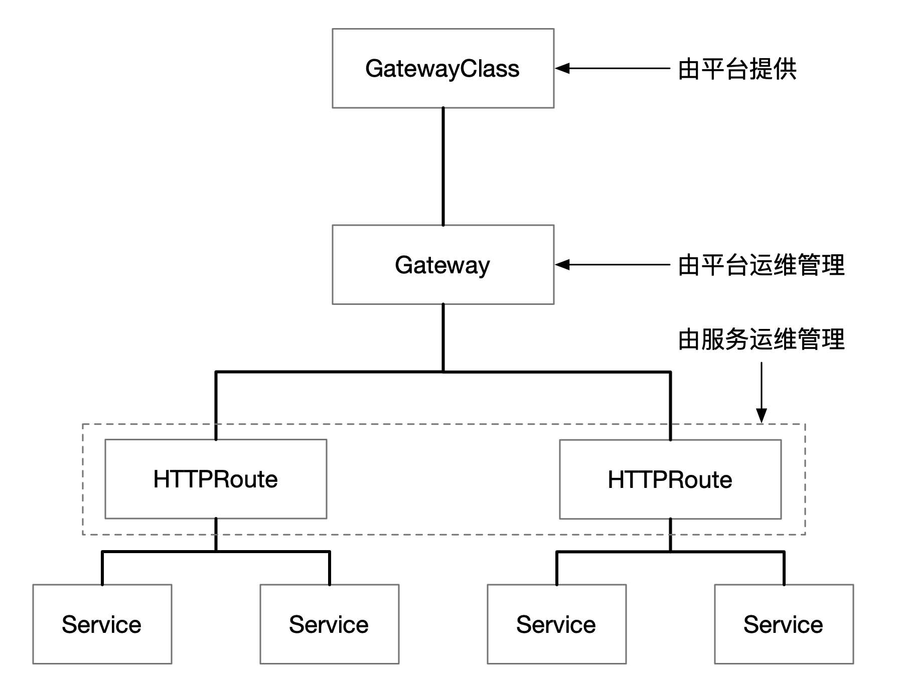
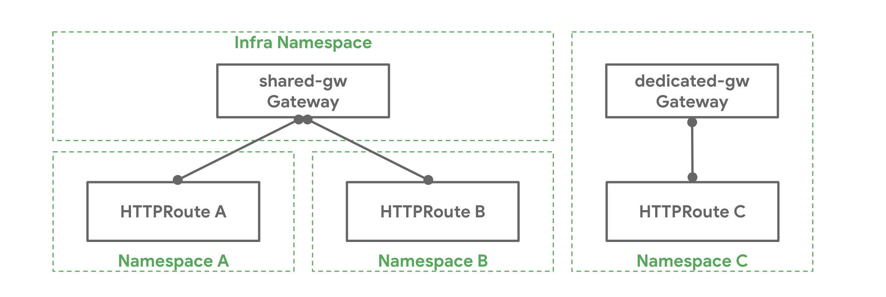
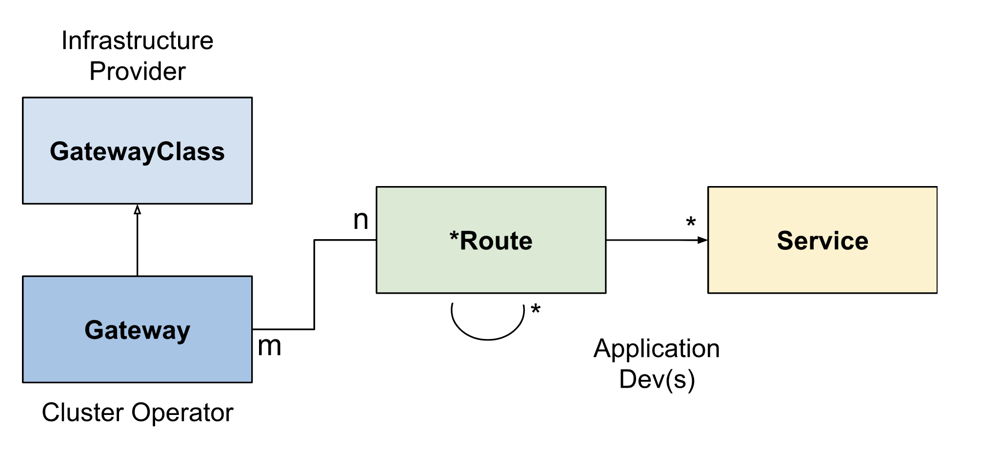

Service API Object
Table of Contents
除了直接使用 Service 和 Ingress 之外，Kubernetes 社区还发起了 Service API 项目 这是一个 CRD，可以将 Kubernetes 中的服务暴露到集群外，Service API 是一个由 SIG-NETWORK 管理的开源项目
该项目的目标是在 Kubernetes 生态系统中发展服务网络 API。Service API 提供了暴露 Kubernetes 应用的接口：Service、Ingress 等
可以在 Service API 的官网 了解更多。该 API 在 Istio 中也被应用，用于将 Kubernetes 中的服务暴露到服务网格之外
目标
Service API 旨在通过提供 表现性的 、 可扩展的 、 面向角色 的 接口 来 改善服务网络
这些接口由许多厂商实现，并得到了业界的广泛支持
Service API 是一个 API 资源的集合： 服务 、 GatewayClass 、 Gateway 、 HTTPRoute 、 TCPRoute 等。使用这些资源共同为各种网络用例建模。下图中展示的是 Kubernetes 集群中四层和七层的网络配置。从图中可以看到通过将这些资源对象分离，可以实现配置上的解耦，由不同角色的人员来管理：

比较
Service API 相较于 Ingress 做了哪些改进：
更具表现力：Service API 表达了更多的核心功能
比如基于头的匹配、流量加权和其他功能，而这些功能在 Ingress 中只能通过自定义方式实现
更具扩展性：Service API 允许在 API 的各个层次上链接自定义资源
这就允许在 API 结构的适当位置进行更精细的定制
- 面向角色：它们被分离成不同的 API 资源，这些资源映射到 Kubernetes 上运行应用程序的常见角色
通用性：这不是一种改进，而是应该保持不变
正如 Ingress 是一个具有众多实现的通用规范一样，Service API 被设计成一个由许多实现支持的可移植规范
共享网关：它们允许独立的路由资源绑定到同一个网关，从而实现负载均衡器和 VIP 的共享
这允许团队安全地共享基础设施，而不需要直接协调
- 类型化后端引用：通过类型化后端引用，Routes 可以引用 Kubernetes 服务，也可以引用任何一种被设计为 Gateway 后端的 Kubernetes 资源
跨命名空间引用：跨越不同 Namespaces 的路由可以绑定到网关
尽管对工作负载进行了命名空间划分，但仍可共享网络基础设施
类：GatewayClasses 将负载均衡实现的类型形式化
这些类使用户可以很容易和明确地了解资源模型本身有什么样的能力
角色
Service API 开发者为其使用场景定义四类角色：
- 基础设施提供方：如 AWS、GKE 等
- 集群运维：管理整个集群的计算、存储、网络、安全等
- 应用程序开发者：为自己开发的应用负责，管理应用的健壮性
- 应用管理员：不是所有的公司都有，通常在一些复杂系统中会有专门的应用管理员
资源模型
资源最初将作为 CRD 存在于 networking.x-k8s.io API 组中。未限定的资源名称将隐含在该 API 组中
Service API 的资源模型中，主要有三种类型的对象：
- GatewayClass：定义了一组具有 共同 配置 和 行为 的 网关
- Gateway：请求一个点，在这个点上，流量可以被转发到集群内的服务
- Route：描述了通过 Gateway 而来的流量如何映射到服务
GatewayClass
GatewayClass 定义了一组共享共同配置和行为的 Gateway：
- 每个 GatewayClass 由一个 控制器 处理，但控制器可以处理多个 GatewayClass
- GatewayClass 是一个集群范围的资源。必须至少定义一个 GatewayClass，Gateway 才能够生效
- 实现 Gateway API 的控制器通过关联的 GatewayClass 资源来实现，用户可以在自己的 Gateway 中引用该资源
这类似于 Ingress 的 IngressClass 和 PersistentVolumes 的 StorageClass 在 Ingress v1beta1 中，最接近 GatewayClass 的是 ingress-class 注解，而在 IngressV1 中，最接近的类似物是 IngressClass 对象
Gateway
Gateway 描述了如何将流量转发到集群内的服务。也就是说，它定义了一个方法，将流量从不了解 Kubernetes 的地方转发到了解 Kubernetes 的地方
例如，由云负载均衡器、集群内代理或外部硬件负载均衡器发送到 Kubernetes 服务的流量 虽然许多用例的客户端流量源自集群的 "外部"，但这并不强求
Gateway 定义了对实现 GatewayClass 配置和行为合同的特定负载均衡器配置的请求：
- 该资源可以由运维人员直接创建，也可以由处理 GatewayClass 的控制器创建
由于 Gateway 规范捕获了用户意图，它可能不包含规范中所有属性的完整规范
例如，用户可以省略地址、端口、TLS 设置等字段，这使得管理 GatewayClass 的控制器可以为用户提供这些设置，从而使规范更加可移植 这种行为将通过 GatewayClass 状态对象来明确
一个 Gateway 可以包含 一个或多个 Route 引用，这些 Route 引用的作用是将一个子集的流量引导到一个特定的服务上
Route
Route 对象定义了特定协议的规则，用于将请求从 Gateway 映射到 Kubernetes 服务。
HTTPRoute 和 TCPRoute 是目前唯一已定义的 Route 对象。未来可能会添加其他特定协议的 Route 对象
BackendPolicy
BackendPolicy 提供了一种配置 Gateway 和后端之间连接的方法。在这个 API 中，后端是指路由可以转发流量的任何资源
后端的一个常见例子是 Service，这个级别的配置目前仅限于 TLS，但将来会扩展到支持更高级的策略，如健康检查 一些后端配置可能会根据针对后端的 Route 而有所不同。在这些情况下，配置字段将放在 Route 上，而不是 BackendPolicy 上
路由绑定
当 Route 绑定到 Gateway 时，代表应用在 Gateway 上的配置，配置了底层的负载均衡器或代理。哪些 Route 如何绑定到 Gateway 是由资源本身控制的。Route 和 Gateway 资源具有内置的控制，以允许或限制它们之间如何相互选择
这对于强制执行组织政策以确定 Route 如何暴露以及在哪些 Gateway 上暴露非常有用。下面的例子： 一个 Kubernetes 集群管理员在 Infra 命名空间中部署了一个名为 shared-gw 的 Gateway，供不同的应用团队使用，以便将其应用暴露在集群之外 团队 A 和团队 B（分别在命名空间 "A" 和 "B" 中）将他们的 Route 绑定到这个 Gateway。它们互不相识，只要它们的 Route 规则互不冲突，就可以继续隔离运行 团队 C 有特殊的网络需求（可能是性能、安全或关键性），他们需要一个专门的 Gateway 来代理他们的应用到集群外。团队 C 在 "C" 命名空间中部署了自己的 Gateway specialive-gw，该 Gateway 只能由 "C" 命名空间中的应用使用
不同命名空间及 Gateway 与 Route 的绑定关系如下图所示：

在如何将路由与网关绑定以实现不同的组织政策和责任范围方面，有很大的灵活性。下面是网关和路由之间可能的对应关系：
一对一：网关和路由可以由一个所有者部署和使用，并具有一对一的关系
团队 C 就是一个例子
一对多：一个网关可以有许多路由与之绑定，这些路由由来自不同命名空间的不同团队所拥有
团队 A 和 B 就是这样的一个例子
- 多对一：路由也可以绑定到多个网关，允许一个路由同时控制不同 IP、负载均衡器或网络上的应用暴露
总之，网关选择路由，路由控制它们的暴露 当网关选择一个允许自己暴露的路由时，那么该路由将与网关绑定 当路由与网关绑定时，意味着它们的集体路由规则被配置在了由该网关管理的底层负载均衡器或代理服务器上 因此，网关是一个网络数据平面的逻辑表示，可以通过路由进行配置
路由选择
Gateway 根据 Route 元数据，特别是 Route 资源的种类 、 命名空间 和 标签 来选择 Route。Route 实际上被绑定到 Gateway 中的特定监听器上，因此每个监听器都有一个 listener.routes 字段，它通过以下一个或多个标准来选择 Route：
Label ：Gateway 可以通过资源上存在的标签来选择 Route
类似于 Service 通过 Pod 标签选择 Pod 的方式
- Kind ：网关监听器只能选择单一类型的路由资源。可以是 HTTPRoute、TCPRoute 或自定义 Route 类型
- Namespace ：Gateway 还可以通过 namespaces.from 字段控制可以从哪些 Namespace、 Route 中选择。它支持三种可能的值
- SameNamespace 是默认选项，只有与该网关相同的命名空间中的路由才会被选择
- All 将选择来自所有命名空间的 Route
Selector 意味着该网关将选择由 Namespace 标签选择器选择的 Namespace 子集的 Route，当使用 Selector 时，那么 listeners.route.namespaces.selector 字段可用于指定标签选择器
All 或 SameNamespace 不支持该字段
下面的 Gateway 将在集群中的所有 Namespace 中选择 expose: prod-web-gw 的所有 HTTPRoute 资源：
kind: Gateway ... spec: listeners: - routes: kind: HTTPRoute selector: matchLabels: expose: prod-web-gw namespaces: from: All
路由暴露
路由可以决定它们如何通过网关暴露。 gateways.allow 字段支持三个值：
All：如果没有指定，则是默认值
这使得所有的 Route 标签和 Namespace 选择器都绑定在网关上
- SameNamespace 只允许该路由与来自同一 Namespace 的网关绑定
- FromList 允许指定一个明确的网关列表，以便路由与之绑定
下面的 my-route Route 只选择 foo-namespace 中的 foo-gateway，而不能与其他 Gateway 绑定
kind: HTTPRoute
metadata:
name: my-route
namespace: bar-namespace
spec:
gateways:
allow: FromList
gatewayRefs:
- name: foo-gateway
namespace: foo-namespace
注意，foo-gateway 与 my-route 在不同的 Namespace 中 如果 foo-gateway 允许跨 Namespace 绑定，并且也选择了这个 Route，那么 my-route 就会与之绑定
网关和路由的绑定是双向的。这意味着两个资源必须相互选择才能绑定：
- 如果一个Gateway的Route标签选择器不匹配任何现有的Route，那么即使Route的spec.gateways.allow = All，也不会有任何东西与之绑定
- 同样，如果一个Route引用了一个特定的Gateway，但该Gateway没有选择Route的Namespace，那么它们也不会绑定
从资源规范中可能并不总是能明显看出哪些网关和路由是绑定的，但可以通过资源状态来确定绑定 路由状态将列出路由所绑定的所有网关以及绑定的任何相关条件
组合类型
GatewayClass、Gateway、xRoute 和 Service 的组合将定义一个可实现的负载均衡器。下图说明了不同资源之间的关系。

请求流程
使用反向代理实现的网关的一个典型的客户端 / 网关 API 请求流程是：
- 客户端向 http://foo.example.com 发出请求
- DNS 将该名称解析为网关地址
- 反向代理在 Listener 上接收请求，并使用 Host 头 来匹配 HTTPRoute
- 可选地，反向代理可以根据 HTTPRoute 的匹配规则执行请求头和 / 或路径匹配
- 可选地，反向代理可以根据 HTTPRoute 的过滤规则修改请求，即添加 / 删除头
- 反向代理可以根据 HTTPRoute 的 forwardTo 规则，将请求转发到集群中的一个或多个对象，即 Service
TLS 配置
TLS 配置在 Gateway 监听器上
此外，对于某些自助服务用例，TLS 证书可以配置在路由对象上
扩展点
API 中提供了一些扩展点，以灵活处理大量通用 API 无法处理的用例：
- XRouteMatch.ExtensionRef：这个扩展点应该用来扩展特定核心 Route 的匹配语义
XForwardTo.BackendRef：这个扩展点应该用于将流量转发到核心 Kubernetes 服务资源以外的网络端点
例如 S3 bucket、Lambda 函数、文件服务器等
- HTTPRouteFilter：HTTPRoute 为这一 API 类型提供了一种方法，可以钩入 HTTP 请求的请求 / 响应生命周期
自定义路由：如果上述扩展点都不能满足用例的需求，实现者可以选择为目前 API 中不支持的协议创建自定义路由资源
Previous: Ingress Home：服务发现和路由